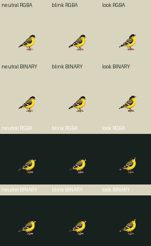
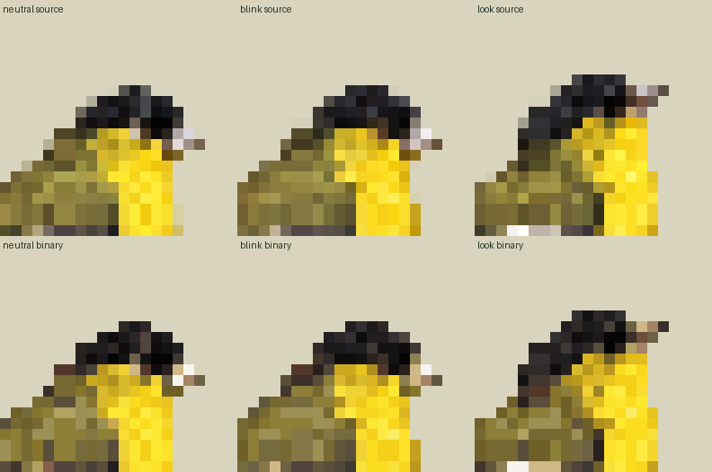
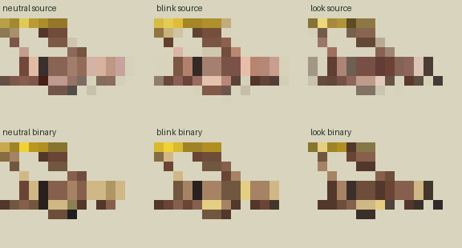

Zero image calls, new drawings or new slots. Exact existing 96px PNGs and three bank source identities retained; historical registered1024neutral/look and native1254closure remain distinct from new 102px derivative IDs. Legacy profiles and bindings stay unchanged. New source 102px RGBA and binary/common64color102 are separate outputs.
Exact old96 at101.647world | source 102px RGBA at102world | binary/commonpalette102 | enlarged binary
Whole96→102 floor-center straightRGBA nearest, no per-pose crop/fit/offset/snap/paint. World101.6470588→102 (+0.352941world,+0.347222%). Sharedpivot57,75→continuous60.5625,79.6875→integer61,80 (+.4375,+.3125rounding). Diagnosticfoot proxies60,79 and64,78 retain actual sampled RGBA; uncertainty≥1pixel, not sole/pressure. Cyan bill/eye pixels and blueorigin cross are technical image proxies only. contacts=[]/geometryReviewed=false/supportWorld=null.
Three separate authored source clips: neutral-onlyidle60tickloop is explicit projection; blink60/3/27 and look60/6/24 keep inherited 30Hz timing and looping. No biologicalblink frequency, smooth head turn intermediates or runtime action admission claim. Runtime derivative applies alpha128/global63opaqueRGB+transparent/no-dither; source102/ preserves original sampled RGB/alpha separately.



Loading…
Structuralreceipt uses unchanged sharedchecker against pinned runtime repo source. Pixel normalization subset only; productionpins/fidelitylabels UNSUPPLIED, full production manifest validation false/current Mac unverified. Sourceappearance and geometry/temporal acceptance remain separate independent reviews.